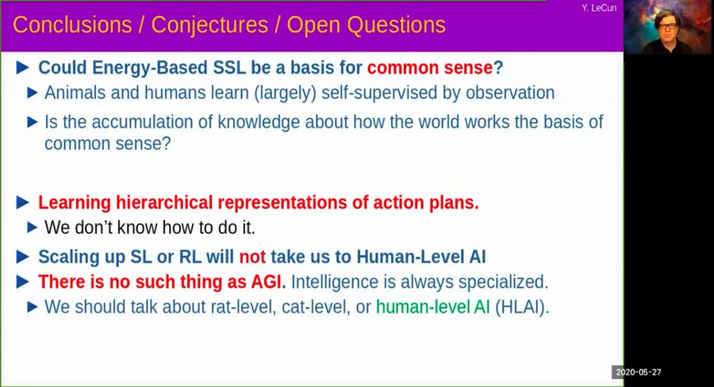
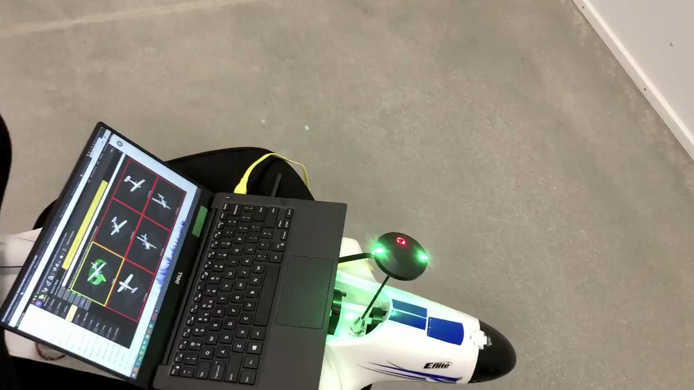
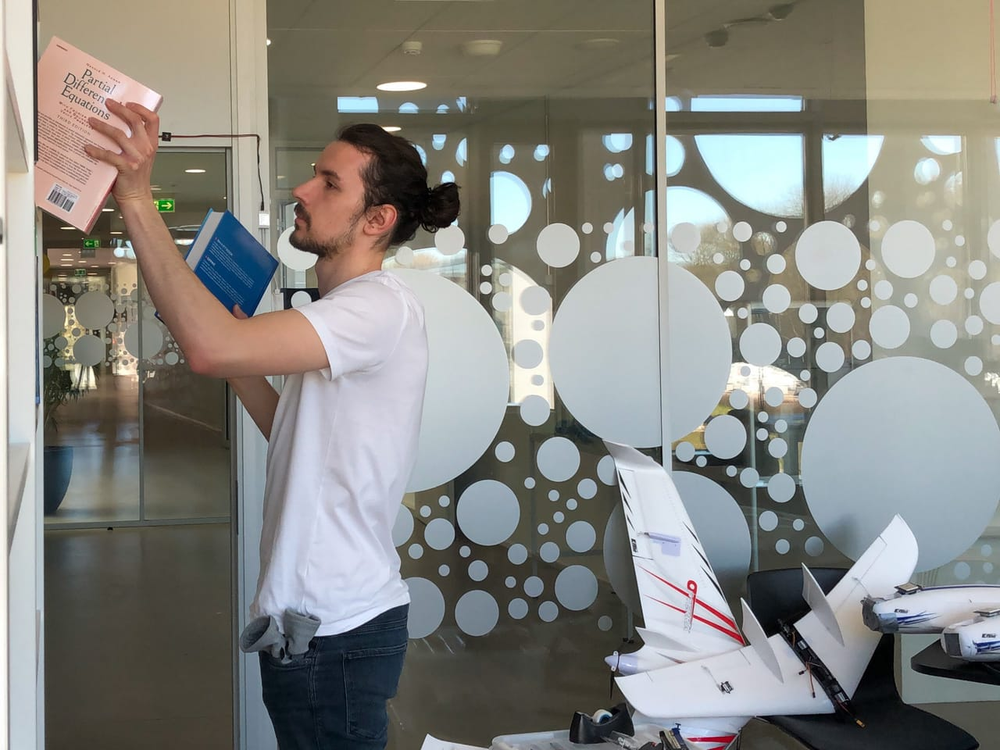
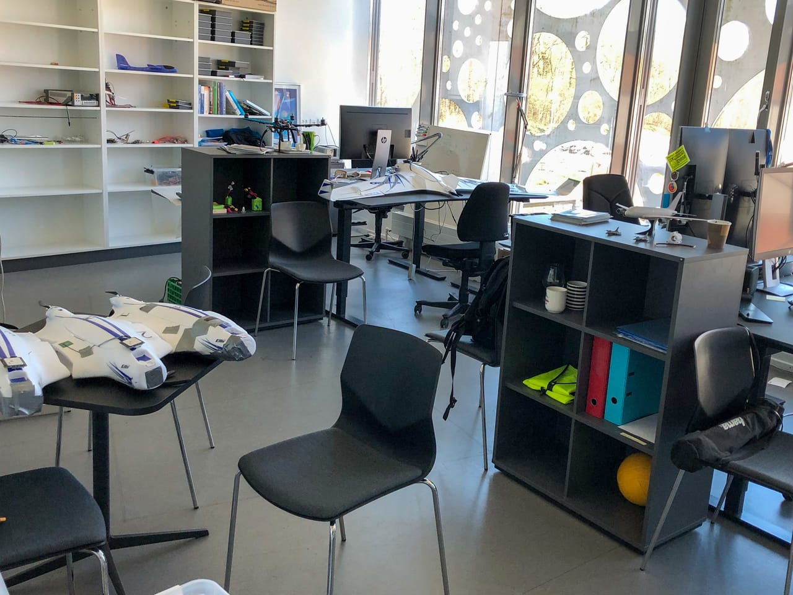

March 29, 2021 - 17:22
Our very first paper with
@ulrikpschultz
,
@Emad_Ebeid_
, and
@HMidtiby
on computational energy modeling for mobile hardware is in the April issue of the International Journal of Parallel Programming!
Here we develop powprofiler, a free energy modeling tool
rdcu.be/chGNt
November 5, 2020 - 13:18
I am looking forward to presenting our work on drones' mechanical and computational energy estimation and on the energy-aware algorithm design at the IEEE RC 2020 conference
irc.asia.edu.tw/2020/
on Monday with
@HectorGdeMarina
,
@ulrikpschultz
,
@HMidtiby
.
May 26, 2021 - 14:58
Join me tomorrow at 13:30 UTC+2 at the TeamPlay Final Workshop if you'd like to know more about energy-aware dynamic planning for aerial robots within the
@TeamPlayH2020
project:
event.sdu.dk/teamplay-workshop/conference
March 29, 2021 - 17:22
Our very first paper with
@ulrikpschultz
,
@Emad_Ebeid_
, and
@HMidtiby
on computational energy modeling for mobile hardware is in the April issue of the International Journal of Parallel Programming!
Here we develop powprofiler, a free energy modeling tool
rdcu.be/chGNt
November 5, 2020 - 13:18
I am looking forward to presenting our work on drones' mechanical and computational energy estimation and on the energy-aware algorithm design at the IEEE RC 2020 conference
irc.asia.edu.tw/2020/
on Monday with
@HectorGdeMarina
,
@ulrikpschultz
,
@HMidtiby
.
October 27, 2020 - 12:35
Join me on Thursday the 29th at 9:20 PST at the
#IROS2020
workshop on planetary exploration robots if you are into planning in the space robots context:
planrobo20.ethz.ch
October 20, 2020 - 22:30
I'll be presenting my work about space robots' computations impact and their relation to planning decisions at the
#IROS2020
workshop on planetary exploration robots on the 29th!
More details to come!
adamseew.bitbucket.io/short/beyond2020
July 31, 2020 - 11:53
Yesterday was a day to remember with the
@NASAPersevere
rover; and I'd like to keep it here with this quote from
@JimBridenstine
at the post-launch news conf: "If we were to receive the budgets, I am very confident that we could get there by the mid-2030s".
#CountdownToMars
Jun 3, 2020 - 18:45
Amazing plenary virtual talk by
@ylecun
at
#ICRA2020
. Looking forward to reading more about Self-Supervised Learning!

May 6, 2020 - 17:12
Just for reference, I guess this shows how not to calibrate the flight controller for a fixed-wing drone...

Apr 13, 2020 - 20:35
A rather sad course of events at the office, collecting some books before further lockdown...

